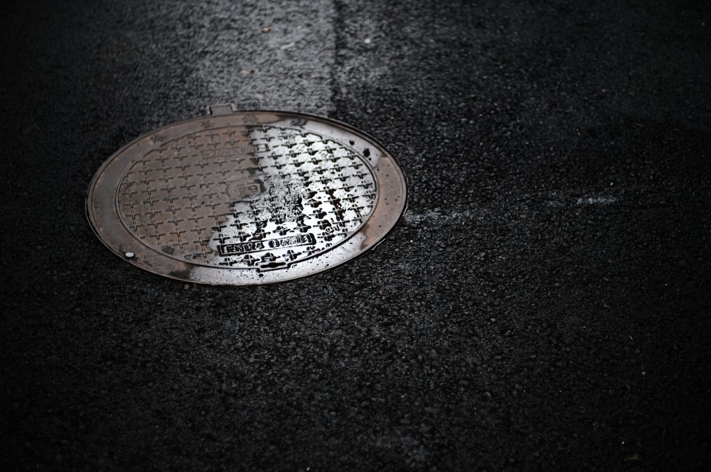
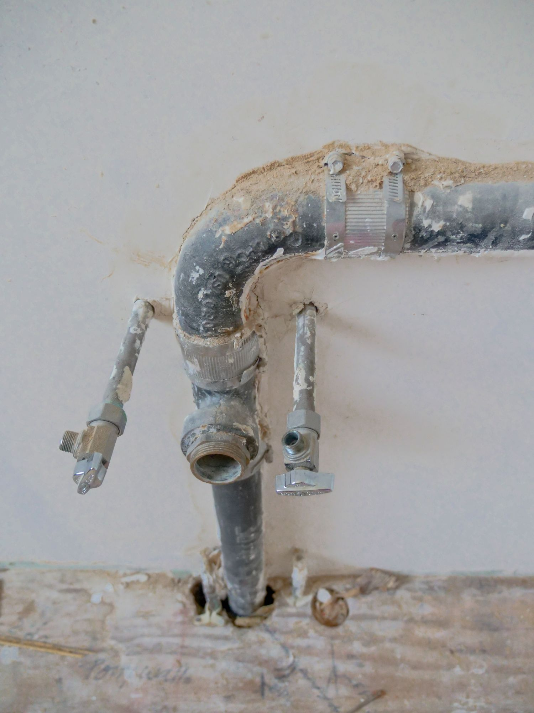

Sewer camera inspection & rodding · Chicago North Side
Know what's in the line before it costs you.
We put a camera down your sewer, show you the footage, and rod it if it needs rodding. Flat rate, same week, and you keep the video.

What we do
Two things, done properly.
No upselling you a trade we don't practise. If the line needs excavation or a liner, we'll tell you and point you at someone who does it well.
Sewer camera inspection
A camera down the lateral from the cleanout to the city main, recorded end to end. You see what we see, while we're standing there.
- Full run from cleanout to main
- Video file sent the same day
- Written findings you can hand to a contractor
- Line located and depth marked on request
Flat rateQuoted on the phone before we book. No hourly meter.
Power rodding
Roots and grease cut back to the pipe wall. Chicago's parkway trees find clay tile joints every time, and a rodded line stays open for seasons, not weeks.
- Cutting head sized to your line
- Camera check after, so you know it cleared
- Annual plans for lines with known root intrusion
- Cleanout access or roof vent
Flat rateScope price comes off the rodding if you book same day.
How it works
Four steps, no mystery.
01
You call or book
Tell us the address and whether you're on an inspection clock. You get a flat price on that call.
02
We scope the line
Camera from the cleanout to the city main, recorded the whole way. You watch it with us.
03
You get the footage
Video and written findings the same day, to you, your agent, or whoever's quoting the work.
04
We rod it, if it needs it
Only if the camera says so. Scope price comes off, and we re-camera after to prove it cleared.
What the camera finds
Three things go wrong in a Chicago lateral.
Most North Side laterals are clay tile laid before the war, in three-foot sections. The joints are where the trouble starts.
Parkway trees find the joints, then grow into the flow. Rodding cuts them back; it does not stop them returning, which is why lines like this get done yearly.
The pipe has settled and holds water. Rodding won't fix it. You need to know it's there before you buy the building, not after.
Clay tile shifts. Small ones get lined, bad ones get dug. Either way the footage is what the contractor quotes from.
For agents & inspectors
Reported so your client can read it.
A sewer surprise after closing is the call nobody wants. You get footage and a plain-English write-up, so you are not the one explaining clay tile to a nervous buyer.
Sent the same day to whoever you tell us — you, your client, or both.
No scare tactics to sell a repair we don't perform. If the line is fine, the report says the line is fine.
Happy to walk a nervous client through the footage so you're not the one explaining clay tile.
Where we work
The North Side, and that's the point.
We stay inside a tight footprint so we get there quickly and we already know what's under your block.
Schematic, not to scale — the point is the footprint, not the cartography.
Questions
The ones we get asked.
How long does a scope take?
Half an hour on a typical lateral, longer if the cleanout is buried or the line is long. You get the footage the same day.
Do I need a cleanout?
It's the easiest access. If there isn't one we can usually go through a roof vent or a pulled toilet. We'll ask before we book so there are no surprises.
Will rodding fix roots for good?
No, and anyone who says otherwise is selling you something. Rodding cuts them back. Lines with mature trees over them get done on a schedule.
Can you do the repair too?
We scope and we rod. For lining or excavation we'll hand you the footage and point you at a contractor who does that work properly.
Is this worth it before I buy?
A scope costs a fraction of a lateral replacement. On pre-war North Side housing stock it's the cheapest piece of due diligence there is.
How fast can you come out?
Usually the same week, and inside 48 hours when there's an inspection contingency running.

Book it
Tell us about the property.
We'll come back with a flat price and a time. If you're on an inspection clock, say so and we'll work to it.
Call or textNumber pending